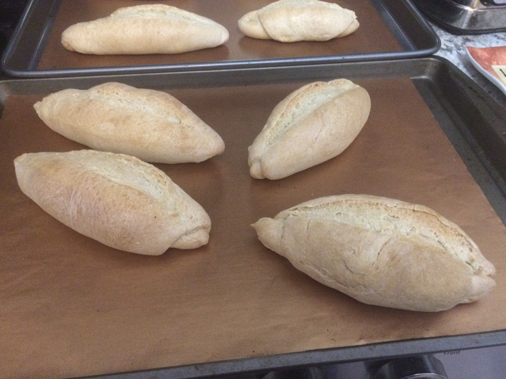

Desserts
Homemade Bread

HOMEMADE BREAD
500 g of wheat flour, (4 1/2 cups) (preferably 12 g of protein)
320ml warm water (NOT hot, it would kill the yeast) 1 1/3 cup + 2 tbsp. approximately.
10 g of instant dry yeast (1 tbsp. Tbsp) NOTE: IF YOU USE FRESH YEAST use 30 grams. THREE of what you would use dry yeast is regularly used.
10 grams of salt (1/2 tbsp. Tbsp)
1 tbsp. of sugar
*EYE! THE CUPS TO WHICH I REFER, ARE MEASURING CUPS OF 225 ML. and ALWAYS MEASURE THE RAS.
IMPORTANT POINTS IN THE PREPARATION OF THE BREAD:
FLOUR: It must be 100% wheat flour that does not contain baking powder (NO leavening) The one I am using contains 12 g of protein. You can find this information on the back of the package, although you can use from 10, 11, 12 g of protein. I do not recommend less than 10 grams, since it would be very refined, it does not absorb much liquid (it remains watery) and it would not develop gluten well, which is what gives bread structure and makes it developed and fluffy.
EACH FLOUR has a DIFFERENT ABSORPTION CAPACITY, that is, some absorb more liquid than others, you probably require a little more water. If so, I suggest you add little by little without going over the liquid so that you don't need to add more flour later. You can add by the spoonful until you get the desired consistency.
TO DISSOLVE THE YEAST: Remember that we are working with a LIVING BEING and yeast is sensitive to certain temperatures. Use warm, NOT HOT water so that inserting a finger is tolerable and you will NOT burn. If you want to use a thermometer it would be between 32 and 38 degrees Celsius (90 and 100 degrees Fahrenheit). If the water is very cold, the yeast will not activate. If the water is hot, the yeast will die. If this happens, the dough will not rise and a hard, caked bread will remain.
WATER INSIDE THE OVEN: it is very important to place the container with water inside the oven to generate steam. I used a cup of water and it was absorbed in the first 20 minutes. If you add more water, remove it after 20 minutes so that the loaves can begin to brown and get that color that we like so much. The steam helps keep the moisture in the dough and allows time for the bread to develop and puff before the outer layer seals and browns. By spraying the pieces with water we help to generate even more humidity to obtain a more developed bread that opens when baking, since most of us use a conventional stove oven. (My oven only gives heat downstairs) This is how we create the conditions to create a bread similar to that of the bakery, although of course, it may never be the same because it is not a professional oven but we try
KNEADING: The kneading time will depend on your skill and experience. It regularly takes 15-20 minutes to knead non-stop. When I started practicing bread, it took up to 45 minutes! So don't worry if it takes a little longer, it may take more or less time. If it is the first time you make bread, you may find it a bit tired. If you have no experience in kneading I suggest you use the block kneading; that is, knead 10 minutes, rest 10 minutes until the dough develops gluten (it is elastic and manageable). If we do not develop the gluten in our dough, the bread does not grow. Since during rest, carbonic gas is generated (which gives volume to the dough) and needs a resistant dough that can contain it so that when baking it is fluffy. AND THE MOST IMPORTANT: Bread is a matter of practice, LOTS OF PRACTICE. Don't be discouraged if it doesn't come out the first time. It is normal. This is how EXPERIENCE is acquired and it will be EASIER each time.